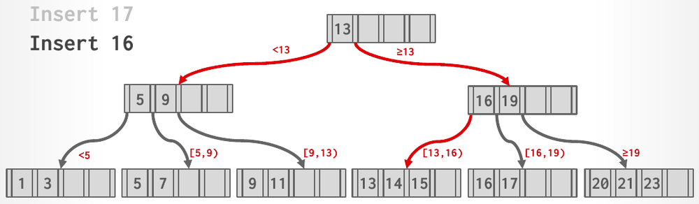

Database Internals in Go · Unit 4 · Lesson 4
P2.4 Internal Splits and New Roots
Split a full internal page so that the key between the two halves moves up and stays in neither, let a split climb the write set level by level, and grow the tree by one level when the root splits, with the shapes the stage-4 tests check.
After the last lesson, a leaf split always found room in its parent. Keep inserting and the parent fills up too. Then the separator has nowhere to go: the parent must split, which hands a key to its own parent, which may be full as well. This is Unit 3's "push up" case, and the only way a B+tree grows taller. Stage 4 finishes Insert, and with it every test of tree growth, including BusTub's 5000-key scale test.
Lesson 2: an internal page holds the keys 15 and 40 at indexes 1 and 2, over children at indexes 0 to 2. Which child does a search follow for 14, for 15 and for 41?
Unit 3, Lesson 3: under the lecture's rules, the inner node [5, 9, 13, 16, 19] has one key too many and splits. What happens to its keys?
Unit 2, Lesson 6: code drops a write guard explicitly to release a page early, and a deferred Drop on the same guard runs again when the function returns. What does the second call do?
The internal split rules
The doc comment on BPlusTree.Insert fixes three more rules, all following the writeup's recommendation, and the stage-4 tests check them through exact tree shapes:
- Split timing. An internal page splits when a child pointer must be added and the page already holds
InternalMaxSizechildren. So an internal page may rest at its max size, unlike a leaf, which splits as soon as it reaches its max. - Split point. Counting the new pointer, there are n =
InternalMaxSize+ 1 pointers. The left page keeps the first n/2, rounded down; a new right page takes the rest. - The key between the halves moves up. The key that separated the left page's last child from the right page's first child goes to the parent and stays in neither page, Unit 3's push up. When the root splits, a new internal root with two children is created and the header page records it.
The writeup's reason for the timing is that it "will also prevent an internal node with only one child". Suppose an internal page of max size 3 split as soon as an insertion brought it to 3 children. The left page would keep 3/2 = 1 child and no keys at all. A one-child page breaks the min size (2 for internal max size 3), and in stages 5 and 6 the underflow repair can spin forever on such a page, a CPU loop that only go test -timeout stops. With the rule above, a split always has InternalMaxSize + 1 ≥ 4 pointers to share, and the left page keeps at least 2.
Traced: leaf and internal max size 4, keys 1 to 10
This is TestBPlusTreeGrowInternalSplitShape's first case, the tree of the example in BatchOpsFromFile's doc comment before its deletions.
- Keys 1 to 8 give four leaves under one root:
(3,5,7) / (|1,2) (|3,4) (|5,6) (|7,8). The root holds 4 children, its max, and stays that way: an internal page may rest full. - Key 9 joins the last leaf, (7, 8, 9): 3 entries, below the leaf max of 4.
- Key 10 brings that leaf to 4 entries, so it splits into (7, 8) and (9, 10), and 9 must go into the root, right after the pointer to (7, 8).
- The root already holds 4 children, so it splits. With the new pointer there are 5: P(1,2), 3, P(3,4), 5, P(5,6), 7, P(7,8), 9, P(9,10). The left page keeps 5/2 = 2 pointers, P(1,2) and P(3,4), with the key 3 between them. The key after them, 5, moves up. The right page takes P(5,6), P(7,8) and P(9,10), with the keys 7 and 9.
- The page that split was the root, so a new root holds 5 over the two halves:
(5) / (3) (7,9) / (|1,2) (|3,4) (|5,6) (|7,8) (|9,10). 5 appears in the root and in a leaf, but in no other internal page.
Inserting 10 down to 1 gives the same tree, but the new pointer then lands in the left half of the split, which is the case that is easier to get wrong. With internal max size 3 and keys 1 to 12, every root split shares 4 pointers 2/2, and the tree ends as (5,9) / (3) (7) (11) / (|1,2) (|3,4) (|5,6) (|7,8) (|9,10) (|11,12).

Why the split can't insert first
A leaf split inserts the entry, then splits, because a leaf at rest always has a free slot. An internal page can't do that. Its arrays have InternalPageSlotCount(keySize) slots, and InternalMaxSize may be as large as that: Options{} gives 681 for 8-byte keys. A full page then has no slot for an extra pointer, so the InternalMaxSize + 1 pointers of a split never all fit in one page. There are two ways around this:
- Split in place. Before moving anything, work out whether the new pointer belongs to the left half or the right half. Move the right half's existing entries into the new page, then insert the new pair into whichever half it belongs to. Both pages have room by then.
- Use a temporary copy. Copy all the keys and pointers, plus the new pair, into Go slices, then write the two halves back. It is simpler to reason about, but it allocates up to a page's worth of memory on every split, and the writeup asks you not to allocate large blocks for the tree.
The in-place version needs one more observation. The right page's slot 0 key is the unused one. If you move the right half's entries including the key in front of its first pointer, that key lands in the right page's slot 0, and it is the key that moves up. Read it from there with KeyAt(0) and pass it to the parent; it does no harm where it is, because nothing ever reads slot 0's key during a search.
A split that climbs, and a new root
In stage 3 your separator step looked at the page just above the one that split. Generalize it to work at any position in the write set. Given the position of the page that split, the separator and the new right page:
- If the position is 0, the page that split is the root. Create a new internal root over the old root and the new page, record it in the header page through
ctx.HeaderPage, and stop. This is the same code as the root leaf's split; the old root keeps its page ID and simply becomes the left child. - Otherwise take the parent, the guard just before it in the write set, and find the insertion index with
ValueIndex+ 1. If the parent holds fewer thanInternalMaxSizechildren, insert there and stop. - If the parent is full, split it while inserting the pair, and repeat from step 1 one position higher, with the key that moved up and the parent's new right page.
The loop (or recursion) stops at the first page with room, or at the root. The tree grows taller only in step 1, which is how every leaf stays at the same depth; TestBPlusTreeGrowHeightIncreases inserts 64 keys one at a time and checks that the root page changes exactly when the height does. The scheme from the last lesson, which keeps the header's write guard and the whole path in the write set, is what makes the climb possible: every page that might split is still write-guarded. Stage 9 adds the crabbing rule: during the descent, release the ancestors as soon as an internal page holds fewer than InternalMaxSize children, because a split from below would stop there.
Mind the buffer pool. TestBPlusTreeGrowBasicScale, BusTub's BasicScaleTest, inserts 5000 keys in random order with leaf max size 2 and internal max size 3 through a pool of 30 frames, and the tree ends 11 levels high. The header page, a write guard on every page of the path and the new pages of a cascading split fit in 30 frames. A guard that an insertion forgets to drop doesn't: its frame stays pinned, each later insertion pins another, and the pool soon runs dry with panic: bufferpool: CheckedWritePage failed to bring in page .... Drop each new page's guard when its split is done, and let the deferred ctx.Release() take care of the path.
#08 B+Trees, "B+ tree insertion operations" (37:11), slides 20–31: the chapter ends with the Insert 16 example, where a leaf split reaches a full root and the tree grows a level.
The climb can be a loop or a recursion; Go handles either, since the depth is at most a few dozen. A recursive helper with the signature "position in the write set, separator, new page ID" reads like the algorithm. Whichever you choose, return the key that moves up as a GenericKey obtained from KeyAt, which is a copy. A slice of the right page's bytes would be read after that page's guard is dropped, and the right page may be evicted by then.
Check your understanding
An internal page with InternalMaxSize = 4 holds children P0 to P3 and keys 10, 20 and 30. A child split below P2 must add the pair (25, Pnew) right after P2. What do the two halves hold, and which key moves up?
Keys 1 to 10 are inserted in order into an empty tree with LeafMaxSize = 4 and InternalMaxSize = 4. What is the tree afterwards?
Why can't a full internal page of a tree created with Options{} handle an insertion by adding the new pair first and splitting afterwards, as a leaf does?
A tree has InternalMaxSize = 3, and someone splits internal pages as soon as an insertion brings them to 3 children. What does such a split produce?
A tree has three levels: a root, internal pages and leaves. One insertion splits a leaf, its parent and the root. How many pages does it create, and what is the tree's height afterwards?
Build it: internal splits and new roots (stage P2.4)
You edit btree/b_plus_tree.go and add helpers to btree/b_plus_tree_internal_page.go. Run commands from go_db_internals/intro_to_db. The rules, in plain words:
- An internal page splits only when a pointer must be added and it already holds
InternalMaxSizechildren. Otherwise the pair is inserted and the climb stops. - Counting the new pointer, the left page keeps the first (
InternalMaxSize+ 1)/2 pointers, rounded down; the right page takes the rest. The key between the halves moves up and is stored in neither page's valid keys. - New internal pages are initialized with
t.internalMaxSize. A root split creates a new root with two children and records it in the header page. - Never let an internal page hold more pointers than its slot count, even for a moment, and drop each new page's guard when its split is done.
-
What to think about
Your stage-3 step assumed the page that split was the leaf. What does it really need to know about that page? Is the check "the parent is full" made before or after inserting the pair? Where does the climb stop?
The approach
Give the helper the context, the write-set position of the page that split, the separator and the new right page's ID. It reads the left page's ID from
ctx.WriteSet[position].PageID(), so it works for leaves and internal pages alike. Position 0 means a root split (the code you already have). Otherwise compute the parent's insertion index; ifparent.Size() < t.internalMaxSize, insert and return. Else call the internal split of the next task, and call the helper again with position − 1 and what the split returns.One key fragment
if parent.Size() < t.internalMaxSize { // checked BEFORE adding the pointer // insert (key, rightID) at index and stop climbing } -
What to think about
A pair at index i is two pieces in two different arrays: which byte ranges does a run of pairs occupy in each? If the destination page is empty and the run goes to its index 0, what lands in its slot-0 key? Which helper from stage 3 would you need if the run were inserted in the middle of a non-empty page (stage 6 does that)?
The approach
For a run of pairs [from, to) of the source, copy the key bytes from
keyOffset(from)tokeyOffset(to)and the page ID bytes fromvalueOffset(from)tovalueOffset(to)into the destination at its own offsets. If the run came from the end of the source, shrinking the source is justChangeSizeBy(−count); grow the destination by the same amount. A version that also takes a destination index, shifting the destination's entries first, serves the merges and borrows of stages 5 and 6.One key fragment
copy(dst.data[dst.valueOffset(at):dst.valueOffset(at+n)], p.data[p.valueOffset(from):p.valueOffset(to)]) // and the same for the keys with keyOffset -
What to think about
Let L be the number of pointers the left page keeps, (
InternalMaxSize+ 1)/2. Compare the new pair's index with L: when does the new pointer end up on the left, and when on the right? In each case, which of the page's existing entries move to the new page? After the move, where is the key that must go up?The approach
Allocate and
Init(t.internalMaxSize)the right page, deferring its guard'sDropto the end of this helper (not of the climb). If the new pair's index is below L, the left page keeps only L − 1 of its own pointers: move entries [L − 1,Size()) to the right page's index 0, then insert the pair into the left page at its index. Otherwise move [L,Size()) and insert the pair into the right page at index − L. Either way the left page ends with L pointers, and the right page's slot-0 key is the key between the halves: return a copy of it withKeyAt(0), together with the right page's ID. Check the result against the trace: 1 to 10 with max sizes 4 and 4 must give(5) / (3) (7,9), inserted in either order.One key fragment
leftCount := (left.Size() + 1) / 2 // left.Size() == InternalMaxSize: the new pointer makes Size()+1 if index < leftCount { // the new pair goes left, so one more of the old pairs must go rightCheckpoint: exact split shapesRun
go test -race -run '^TestBPlusTreeGrowInternalSplitShape$' ./btree/. It builds the traced tree in ascending and descending order and the internal max size 3 tree of keys 1 to 12, compares each shape, and runscheckTree. Success printsok intro_to_db/btree. Keeping the larger half on the left fails withgot: (7) / (3,5) (9) / ...againstwant: (5) / (3) (7,9) / ...; never splitting an internal page fails withinvalid tree: internal page 3 has 5 children, more than its max size 4. -
What to think about
Is a root internal page's split any different from a root leaf's, once the separator and the new page are known? Which guard must still be held for the header page to change? Count the guards the insertion holds at its deepest point: the header, the path, and how many new pages?
The approach
Reuse the new-root code from stage 3 for position 0, whatever the old root's type: the new root's child 0 is
ctx.WriteSet[0].PageID(), its key 1 the separator, its child 1 the new page; set its size to 2 and write its ID throughAsBPlusTreeHeaderPage(ctx.HeaderPage.DataMut()). Updatectx.RootPageIDas well, if your code reads it later. A nilctx.HeaderPageat this point is a bug in your descent: panic with a clear message rather than writing nowhere. Then run the scale test: if it reportsCheckedWritePage failed to bring in page, some guard is never dropped.One key fragment
if ctx.HeaderPage == nil { panic("btree: the root split but the header page is not held") }
From go_db_internals/intro_to_db, run:
go test -race -run '^TestBPlusTreeGrow' ./btree/It runs the seven stage-4 tests. Two are BusTub's: InsertTest1NoIterator as TestBPlusTreeGrowInsertTest1NoIterator (five keys with leaf max size 2 and internal max size 3, enough for an internal split) and BasicScaleTest as TestBPlusTreeGrowBasicScale (5000 shuffled keys through 30 frames). The other five are extra: InternalSplitShape, HeightIncreases, RandomOrders (300 shuffled keys for six combinations of max sizes, with checkTree and duplicate checks), KeySize16 (height at least 3 with 16-byte keys) and ReleasesLatches, each with the TestBPlusTreeGrow prefix. Success prints ok intro_to_db/btree and the time, about 11 seconds under -race, most of it the scale test.
Typical failures:
- An internal page split as soon as it reaches its max: the shape tests print empty internal pages,
got: (3) / () (5) / () () (7) / ..., andcheckTreereportsinvalid tree: internal page 15 has 1 children, fewer than its min size 2. - A split that keeps the larger half on the left:
got: (7) / (3,5) (9) / (|1,2) (|3,4) (|5,6) (|7,8) (|9,10). - Frames running out in the scale test:
panic: bufferpool: CheckedWritePage failed to bring in page 2502, followed by the stack of the split that asked for the page. Guards that are never dropped cause it, and so do the extra levels of a tree full of one-child pages. - A new root that isn't recorded in the header page: lookups start from the old root, now only the left half, and fail for keys on the right, with messages such as
GetValue(9) = (_, false), want (page_id: 0 slot_num: 9, true).
Run it with a time limit after the regex:
go test -race -run '^TestBPlusTreeGrow' -timeout 120s ./btree/The tests bound every wait on a latch, but they can't stop a loop that never waits, such as a climb that keeps splitting the same page. go test's own timeout can: when it fires, it names the running test and prints every goroutine's stack. Once stage 4 passes, rerun the earlier stages too, go test -race -run '^TestBPlusTree(Page|Search|Insert)' ./btree/, to check that nothing you changed broke them.
Primary sources: the CMU 15-445/645 Fall 2025 Project #2 writeup (Task #2, Development Roadmap "Multiple Splits", Requirements and Hints); BusTub src/include/storage/page/b_plus_tree_internal_page.h, src/include/storage/index/b_plus_tree.h, src/storage/index/b_plus_tree.cpp and test/storage/b_plus_tree_insert_test.cpp and b_plus_tree_sequential_scale_test.cpp at commit d49b823; Lecture #08 slides 20–31; this course's btree/b_plus_tree.go, btree/b_plus_tree_debug.go, btree/b_plus_tree_insert_extra_test.go and btree/b_plus_tree_sequential_scale_test.go.